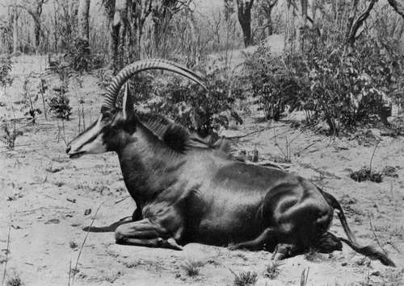

Chapter VIII - I.— Field Notes On The Game. Part 6
Description
This section is from the book "Wild Life In Central Africa", by Denis D. Lyell. Also available from Amazon: Wild Life in Central Africa.
Chapter VIII - I.— Field Notes On The Game. Part 6
Sable antelopes used to inhabit a great range of country in Africa, they are still numerous in the country lying north of the Zambesi River, and they are particularly abundant in parts of Nyasaland, Portuguese East Africa, and North-Eastern and Western Rhodesia. Anyone who wishes to get a really big pair of sable horns should go to the latter country, and I am sure he will get what he wants.
Sable are usually found in herds of from ten to twenty-five animals, and sometimes much larger herds will be seen.
The old bulls seem to love to lead a solitary existence at times, and they are then much easier to shoot than the herd bulls, as their hearing and sight fails, and they have not the safeguard of the younger and more alert animals as a protection.
The largest pair of sable horns I have shot only measure 43m. I found the animal sleeping at a distance of sixty yards or so, and killed him as he lay, so there was little true sport in the affair.
I got this bull in North-Eastern Rhodesia, and near where I shot him I wounded, on another day, a bigger-horned bull, which I lost after spending the best part of two days spooring him. He was only slightly hit, or I would likely have been successful in finding him. Again, when travelling to Broken Hill, in North-Western Rhodesia, I wounded a very large-horned bull, which I also lost, as a rainstorm came on and washed out his tracks. I had a-good look at this animal's horns before firing at him, and they were certainly not less than 45m. Such is hunter's luck, or, perhaps, I should term it indifferent shooting. To a man keen on good game-heads the sight of an exceptional pair of trophies is very apt to cause bad shooting, especially before he has learned by experience to keep cool and shoot steadily.
The Sable Antelope.
When disturbed I have noticed that sable often run into the open, whereas more bush-loving animals, such as kudu and bushbuck, immediately run for the thickest cover they can find. I think sable depend more to their eyesight than the two latter species, who trust in their hearing more as a protection against danger. Young sable are a rufous-red colour, and about the third year they begin to turn darker; but it takes some years for them to assume the jet black coat of the old beasts. Even the oldest sable will show reddish hairs on the ears, and old bulls fight a good deal and get their ears torn and split, as I have shot several with half their ears gone. Sable meat is fairly good eating, and the marrow from their bones, as well as that of other large antelopes, is very tasty. The bones are easily cracked with a stone, hammer, or axe ; and the marrow can be cooked by putting the bone on a camp-fire ; but, before doing this it is better to crack one end, or the accumulation of steam inside will likely split the bone and scatter the contents.
All old sable, bulls and cows, have a prominent bulge on the base of the horns which gets smoothed up, although the rings are easily visible.
If a good pair of sable horns are shot which do not show this bulge, it is likely that they have not reached their full growth. The horns of the females are much thinner than those of the bulls, and they never form a great curve.
Kudu (Strepsiceros Kudu)
Native Names
Chinyanja - Ngoma.
Chingoni - Kugea.
Approximate weight, | ♂ | 550lb. |
Good average horns, | ♂ | 53in. curve. |
A big bull kudu is a picture of beauty when seen standing on some scrubby hillside with his long spiral horns laid back, and his ears raised to catch the slightest sound. However, he is not often viewed like this, as he is generally a most wary animal, who knows how to take care of these long curving trophies of his, and the usual view is that of a herd, with one or two bulls, doing very good time through the thick bush.
The bulls are much heavier and taller than the cows, and I do not think many of the females would weigh more than 35olb. Kudus have extraordinary large ears, and it is evident that their ears were made for the purpose of self-protection, as, their lives being spent in fairly thick country, they depend for safety mostly on their powers of hearing.
Kudu browse more than most animals, except perhaps bushbuck and eland. Besides their splendid heads (the males only bear horns although exceptional cases of cows growing horns are on record), their most noticeable features are, besides abnormal size of ears, their pretty blue-grey hides profusely striped with white, and their graceful small hoofs. The males also grow long hair under their throats, which enhances their beauty. T have never seen very large herds of kudu, and a collection of thirty animals may be considered a very large one. Like sable and eland, the old bulls often wander by themselves, although not to such an extent as the former animals, and it is a fairly common sight to see several good bulls consorting together. I recently saw five fine bulls running with a herd of elands.
An old bull kudu (often spelt koodoo) may become almost hairless, when the prominent stripes will become very faint.
There is a very fine specimen of a bull kudu mounted in the Natural History Museum at South Kensington, and a glance will show what a perfect animal he is, but he looks finer still if one has the luck to see him standing on some bare ground with the rocks and scrub all round and a blue sky overhead.
I should imagine that leopards kill a large number of kudu fawns, as they inhabit the same type of country, and there is no doubt that the larger animals are often killed by lions. On several occasions I have seen kudu make long jumps, something like impala, when much startled, and 1 once saw two medium-sized bulls fighting, but this was more of a pushing match than a battle with their horns.
I heard of a pair of kudu horns being found interlocked and it was evident that the poor animals had met with a painful death, by degrees, of starvation. A large kudu must have a good eye for measurement, as he will often dash between two close-growing trees, just sufficiently wide to pass his horns, although he can twist his neck considerably to decrease their space if he wishes to do so.
Continue to:
- prev: Chapter VIII - I.— Field Notes On The Game. Part 5
- Table of Contents
- next: Chapter VIII - I.— Field Notes On The Game. Part 7